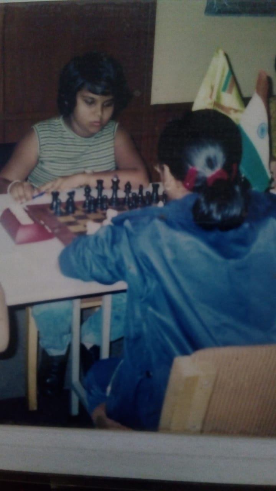

Yes!, I like to travel. I wanr to go to places that I never see. I want that feeling when wind blow to the face. The freedom. Challenge. Meet Strangers.I love Traveling
Sometimes this is not the case. but I want to play chess. Learn the art of science. Chess has everything. Even politics
A moody classic song or high beat song can fix my mood. Release my stress. Try some Sri Lankan songs here
Sri Lankan Voice final songMovie like Ho Gana Pokuna (The unseen Sea) will fix mortivate and relax you.